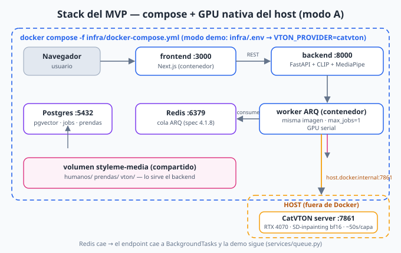
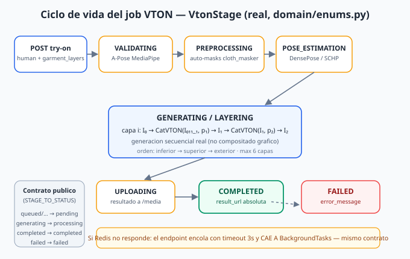
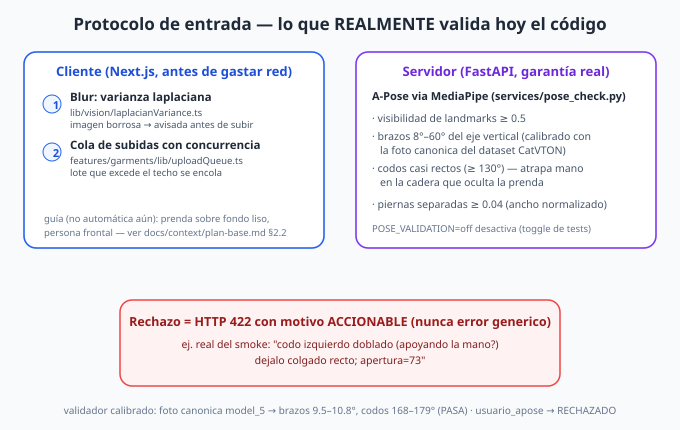
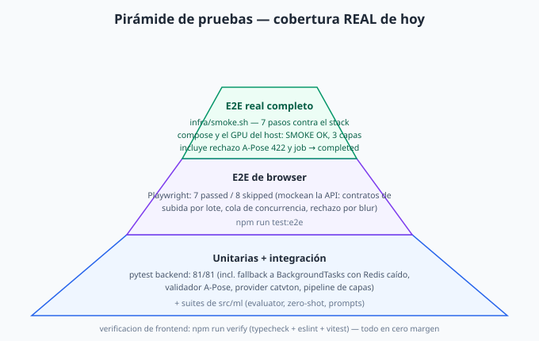
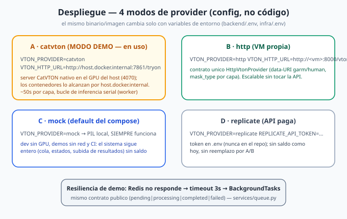

🧰 Stack del MVP
Todo lo que no exige GPU vive en contenedores (compose, con healthchecks y depends_on). La única pieza nativa es el server de inferencia CatVTON en el GPU del host — Docker Desktop no pasa CUDA sin un setup WSL2 completo, y los pesos ya cacheados en el host. El worker containerizado lo alcanza con host.docker.internal, el almacen de media lo comparten backend y worker por volúmen.


🔄 Pipeline del job VTON
Máquina de estados real (backend/src/domain/enums.py, tabla VtonJob.stage). Las capas se generan secuencialmente — cada inferencia toma la salida de la anterior como imagen base (no compositado gráfico). El contrato público pending|processing|completed|failed se deriva con STAGE_TO_STATUS, por eso el frontend no cambió al agregar la cola.


📸 Protocolo de entrada
Validación en dos capas: el cliente rechaza borrosidad (varianza laplaciana) antes de gastar red; el servidor garantiza la pose A-pose con MediaPipe y ciertas geometrías, con umbral calibrado midiendo la foto canónica del dataset CatVTON (brazos 9.5–10.8°, codos 168–179°). Todo rechazo llega con motivo accionable. Guías no automatizadas (fondo, resolución mínima) quedan documentadas, no disfrazadas de checks.


🧪 Pruebas
La pirámide refleja lo que corre HOY: 81 tests pytest (unitarias + integración + fallback Redis-caído en la misma suite); E2E de browser con Playwright (mockean API — contratos de UI); y el infra/smoke.sh que ejecuta el flujo completo real de la demo (7 pasos, con job multicapa sobre el GPU). Verificación extra del frontend con npm run verify.


🚀 Despliegue
El mismo sistema cambia de modo con variables de entorno — sin bifurcaciones de código: mock (PIL, siempre funciona, default del compose), catvton (GPU del host, modo demo, fijado en infra/.env commiteada), http (VM externa con el mismo contrato HttpVtonProvider) y replicate (API paga, token fuera del repo). Si Redis no responde, el endpoint cae a BackgroundTasks tras 3s — mismo contrato.
